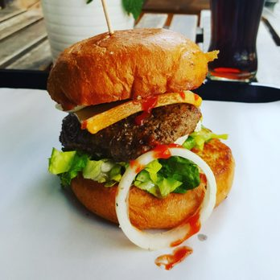
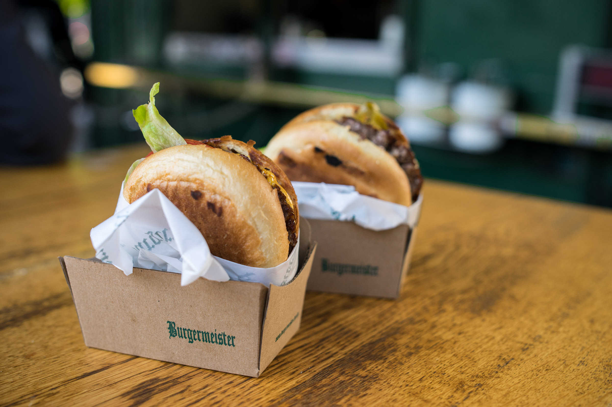
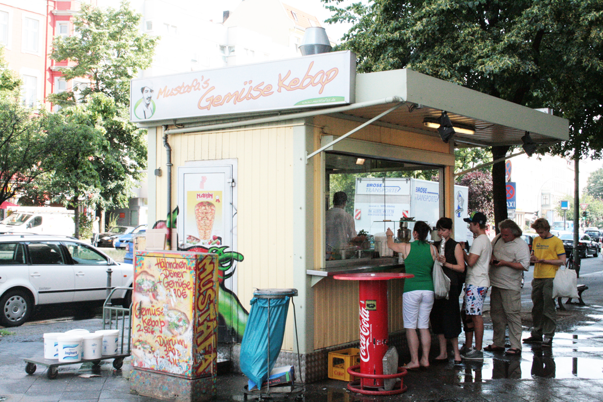

Das ist eine sehr gute Frage, die ich versuchen werde zu klären. Hallo erstmal ihr Lieben auf unserer tollen Webseite (obwohl sie noch nicht so toll aussieht). Dies ist unser erster Versuch eines Blogs. Wir sind Mandy, Tommy, und Adil. Also habt bitte Gnade :) Unsere Vorstellung von der Seite ist es das ganze in drei Bereiche aufzuteilen. Mandy übernimmt das breitgefächerte kochen zu Hause, Tommy das fabelhafte Essen in der Mensa und Adil diverse Restaurants. Zu diesen Bereichen schreiben wir unsere persönlichen Ideen und Erlebnisse aus persönlicher Sicht um euch einerseits an unserem tollen Geschmack teilhaben zu lassen (oder auch nicht, ist ja schließlich Geschmackssache) und euch gleichzeitig Tipps und Feedbacks mit diversen Informationen mitzugeben. Wir hoffen ihr und wir werden spaß an unserem Blog haben. Spenden sind übrigens immer willkommen :P Hier die Daten unseres offshore Bankkontos: IBAN: AF54 1315 4648 4515 6517 00 BIC: THISISNOTLEGAL89BD
Die Pizzeria aus dem Dorf
Heute möchte ich euch die Pizzeria meines Heimatdorfes vorstellen. Das Gasthof Krone aus Sulzbach an der Murr ist zwar die einzige Pizzeria in Sulzbach, jedoch bin ich mir sicher, dass sie selbst mit mehr Konkurrenz die beste wäre. Die Location ist sehr schön altmodisch aufgebaut und erinnert an Italien. Essen kann man neben Pizza auch jegliche anderen Italienischen Gerichte die man so auf einer Speisekarte finden kann. Preislich ist das ganze nicht ganz billig, jedoch stimmt dafür die Qualität. Es ist meist sehr gut besucht, und das nicht nur zu den Stoßzeiten. Viele aus der näheren Umgebung suchen dieses Restaurant auf. Bei meinem letzten Besuch habe ich eine klassische Pizza Tonno gegessen, die ich nur jedem wärmlichst empfehlen kann.
Die örtliche Brauerei
Das sulzbacher Schlösslebräu ist, wie der name schon sagt eigentlich eher eine Brauerei. Jedoch kann man hier nicht nur gutes Bier trinken sondern auch schick essen. Im "Schlössle" gibt es typisch deutsche Gerichte wie Schnitzel, aber auch schwäbische Spezialitäten wie Maultaschen und Zwiebelrostbraten. Die Einrichtung ist sehr schön altdeutsch gehalten, dass dem ganzen ein bestimmtes Flair verschafft. Es ist ein beliebtes Ziel für Familien und ältere Gäste, jedoch gibt es immer wieder Events die das jüngere Publikum ansprechen sollen. Meine empfehlung hier wäre ein Lagerbier und dazu das Schnitzel mit Pommes.
Bobsek Burger!

Die Burger von Bobsek sind immer wieder ein Genuss! Heute stelle ich euch ein Burgerrestaurant nicht allzu weit weg von mir vor. Bobsek findet man im schönen Schöneweide wieder. Das Restaurant strahlt eine sehr nette Atmosphäre und wirkt sowohl von außen als auch von innen sehr einladend und sympathisch. Preislich sind die Burger vergleichsweise etwas teurer, jedoch sollte man sich nicht beklagen, da die Qualität der Burger hervorragend ist! Ich würde hier jederzeit wieder essen! Sehr empfehlenswert! Ich habe schon viele Burger in der gleichen Preisklasse gegessen, jedoch ist mir der Burger von Bobsek von allen Burger am besten in Erinnerung geblieben! Gutes Zeichen! Demnächst werde ich bei Burgermeister vorbeischauen. Danach kann ich einen ersten Vergleich der berliner Burger ziehen! Seid gespannt! Bis demnächst!
Der Burgermeister von Berlin

Wie ich bereits im letzten Post schon angedeutet habe, war ich nun bei Burgermeister am Kottbusser Platz. Die Bude war zum Zeitpunkt meines Besuches sehr gut gefüllt, was ich nun auch total nachvollziehen kann! Der Burger war günstiger als erwartet und auch um einiges günstiger als der Burger bei Bobsek. Jedoch muss sich der Burgermeister-Burger in Sachen Geschmack und Qualität keineswegs verstecken. Ganz im Gegenteil: Der Burger war ausgezeichnet und für dein Preis auch mehr als zufriedenstellend. Man kann sagen, dass der Burger nur deswegen günstiger ist, da dieser auch etwas kleiner ausfällt als der Burger bei Bobsek. Alles in allem ist der Burger hier sehr zu empfehlen! Vor allem den BBQ – Burger sollte man unbedingt mal getestet haben. Ein kurzer Besuch beim Burgermeister, wenn man mal in Berlin ist, ist es auf jeden Fall wert! Bis zum nächsten Mal. Euer Adil!
Der Asiate in Schöneweide
Ich habe mich dazu entschieden, mal das asiatische Restaurant nicht weit von der Uni auszuprobieren. Da das Essen in der Mensa mich nicht angesprochen, musste ich mir eine alternative Essensquelle suchen und bin da auf Tung 5 in 1 gestoßen. Erstmal: Die Auswahl an Gerichten ist gewaltig! Es gibt hier alles, was das Herz begehrt. Auch preislich ist es akzeptabel – tendenziell sogar recht günstig. Ich habe die Pho Suppe probiert. Und ich muss sagen, dass die das verdammt gut zubereiten! War direkt überzeugt! Seit dem ersten Besuch war ich nun noch zwei weitere Male dort essen. Auch die Nudel – und Reisgerichte schmecken vorzüglich! Wenn es mal etwas asiatisches sein soll das nächste Mal, dann weiß ich, wo ich hingehen muss! Sehr empfehlenswert, vor allem die Suppen!
Gemüsedöner? Schmeckt!!

Mustafas Gemüse Kebap – Diese drei Worte sollte jeder Berliner sicherlich schon mal gehört haben Der Dönerladen ist wohl mit einer der bekanntesten in ganz Deutschland! Zwar ist es kein Restaurant oder Schnellimbiss wie in meinen vorherigen Beiträgen, jedoch hat mich die Neugier geweckt, da mal einen Döner zu testen. Ich habe schon vieles von Mustafas gehört, dass die Schlange stets kilometerlang ist, dass man dort Stunden warten muss, bis man seinen heißersehnten Döner in den Händen hat. Ich hab an dem Tag allerdings sehr viel Glück gehabt! Die Schlange war erstaunlich kurz, sodass ich relativ schnell zu meinem Döner kam. Die bieten da neben dem Gemüse – Döner auch Döner mit Fleisch an. Den hab ich dann auch probiert. Und ich bin echt beeindruckt von dem Geschmack! Der ist schon unvergleichbar gut! Auf jeden Fall mit einer der besten Döner, die ich je gegessen habe! Natürlich ist es fraglich, ob es sich dennoch lohnt, so lange dafür anzustehen für einen Döner. Mein Fazit: Auf jeden Fall! Jeder Besucher Berlins sollte Mustafas Gemüse Kebap einen Besuch abstatten, sofern die Zeit es zulässt. Ich hatte, wie gesagt, unglaubliches Glück. Immer wieder gern! Kleine aber feine Dönerbude!